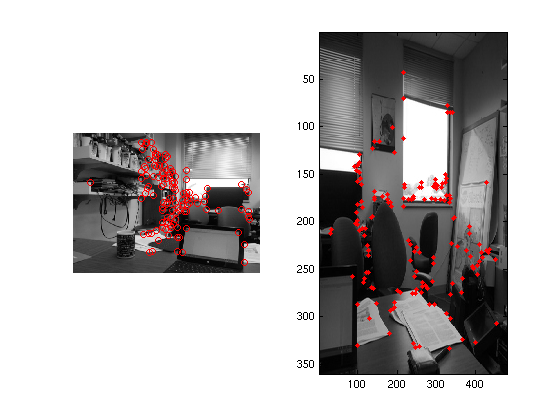

The purpose of this project is to automatically stitch images of the same scene together into a panorama view. This is done by finding corresponding points from the images and transforming the images so that the corresponding points match.
The algorithm for panorama stitching involves several steps:
For the first step, I first used a Harris corner detection algorithm to derive interest points that can be potential matching points. These interest points are then reduced with the ANMS (Adaptive Non-maximal Suppression) algorithm, so that I could save algorithm runtime with less interest points that cover the image space more evenly. Then, for each interest point, I obtain a feature descriptor from it. I use a 40*40 frame of the grayscaled input image centered at the interest point to produce a 8*8 feature descriptor, choosing one pixel every 5 elements. This descriptor is used in comparison with features from the other image to find correspondence. This is done by first calculating the SSD difference between each of the feature descriptors, then finding the ratio between the minimum SSD and the second minimum SSD. If this ratio is below a certain error threshold, I consider it as a potential point for feature matching.
For the second step, I used 1000 iterations to find the best 4 points from the two images to use to produce the homograph. The best homograph is the one with the most inliers, and inliers are decided by the nubmer of sample points in the first image that can be matched by the homograph correctly onto the second image at an error of 0.5 pixels or less.
The third step is a simple image transformation using the homography obtained from the previous step. New image boundaries are calculated.
The last step is a simple algorithm that averages the overlapping region of the images
Below I show the results of the panorama stitches I attempted
| Image of train. From left to right: Harris corner detection points, matching points, stitch results |
| Image of mountain. From left to right: Harris corner detection points, matching points, stitch results |
| Image of mountain. From left to right: Harris corner detection points, matching points, stitch results(bottom) |
| Image of mountain. From left to right: Harris corner detection points, matching points for image 1 and 2, matching points for image 3 and 4, stitch results (bottom) |
|  |
The top three results are satisfactory, but with a slight blur to the images at the points of overlap. This is a result of imperfect homographies. There seems to be a level of randomness caused by the RANSAC algorithm, and sometimes the results generated can be significantly better, or much worse. The last image is a failure case. it seems that for a lot of the overlap regions only a portion is matched up, whereas the other points are not. This could be a result of the interest points not adequately covering portions of the input image, and can be remedied by decreasing the sensitivity of the corner detection algorithm to produce more sample points.